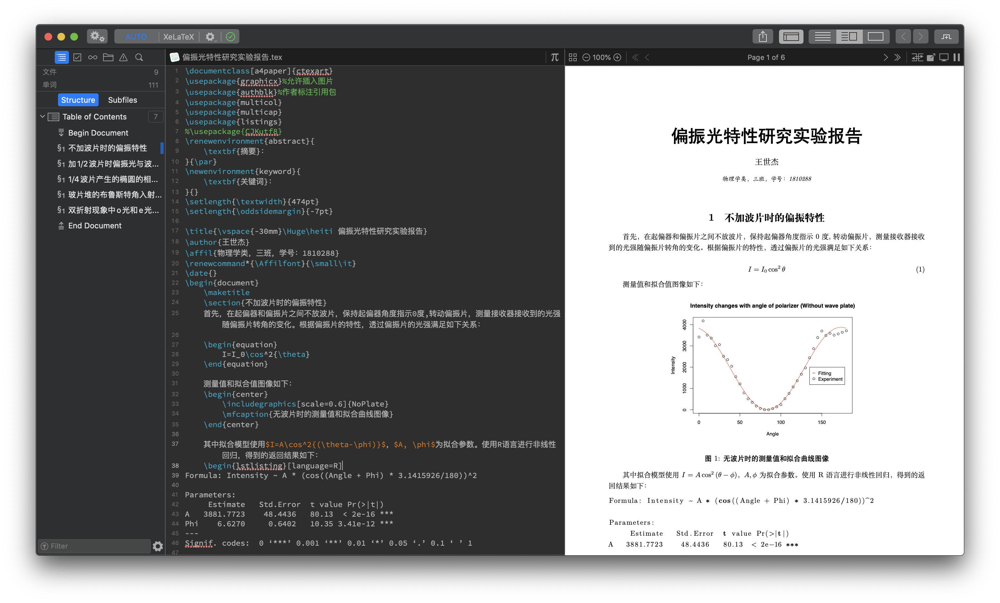
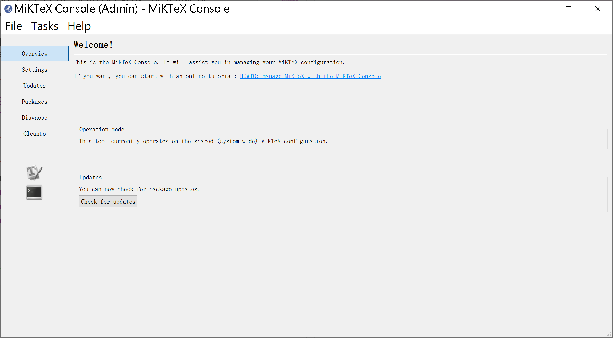
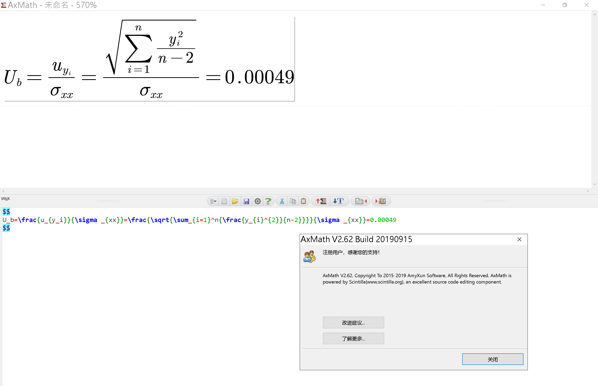

How to Master LATEX Scripting in Physics Essay Writing?
Jourin Town(Benhao Tang)
School of Physics,Nankai University
https://github.com/benhaotang/pubnotebook
Installation
- Windows
- CTEX
- WinEdt with MikTeX
- Mac OS
- TeXPad
- Linux
- Gummi
- vim
- Across platform
- VSCode
- TeXStudio
Windows – WinEdt
Mac OS – TexPad

Linux – Gummi
Linux – vim
All Across the Platform – VSCode
All Across the Platform – TeXStudio
Configuration Platfrom
MikTeX Console

TeX Utility Console on Mac OS
TeX Utility Console in Terminal
First Things First
\documentclass{article} \usepackage{xxx} \usepackage{xxx} \begin{document} ... \end{document}
type = ctexart article report book beamer standalone
ctexart must be interpreted in pdflatex
article with ctexcap must be interpreted in xelatex
Recipe
- PDFLaTeX
- XeLaTeX
- Lyx
Magic Comment
% !TEX program = xelatex
Use Chinese!
- 我們是——
- 中國人！
- 我們需要——
- 中文！！！！中文！！！！
so how do we use Chinese in LATEX?
\documentclass{ctexart} \begin{document} ... \end{document}
\documentclass{article} \usepackage{ctexcap} \begin{document} ... \end{document}
\documentclass{article} \usepackage{CJK} \begin{document} ... \end{document}
Chapter and Sections
\section{} \subsection{} \subsubsection{}
paragraph
xxxxxx\par
or
xxxxxx
xxxxxx
Symols in LATEX
| Symbol | Meaning |
|---|---|
| % | Annotation |
| \ | Escape Character |
| $ | Math Mode |
| # | Parameter |
| { | Start of chunk |
| } | End of chunk |
| a^b | superscript(ab) |
| a_b | subscript(ab) |
| & | Separator in Table Chunk |
Symols in LATEX
| Symbol | Representation |
|---|---|
| □□ | \frac{}{} |
| □□ | ^{} |
| □□ | _{} |
| Aα | \Alpha\alpha |
| Σ□□□ | \Sigma^{}_{} |
| ∫□□□ | \int^{}_{} |
| ∮□□□ | \oint^{}_{} |
| □ | \sqrt{\Box} |
| → | \rightarrow |
Complex Symols in LATEX
\left[ \begin{matrix} \Box& \Box& \Box\\ \Box& \Box& \Box\\ \Box& \Box& \Box\\ \end{matrix} \right]
⎣⎢⎡□□□□□□□□□⎦⎥⎤
\begin{cases} \Box\\ \Box\\ \Box\\ \end{cases} --- \left\{ \begin{array}{c} \Box\\ \Box\\ \Box\\ \end{array} \right.
⎩⎪⎨⎪⎧□□□

setting equation number
y=k×x+b(1)
\usepackage{amsmath} \numberwithin{equation}{section}
y=k×x+b(1.1)
Tables in LATEX
\begin{table}[htbp] \centering \caption{demo} \begin{tabular}{ccc} \hline A & A & A \\ \hline A & A & A \\ \hline \end{tabular} \label{tab:haha} \end{table}
| A | A | A |
| A | A | A |
If the table is too large, use \resizebox in package “graphicx”
Insert Pictures in LATEX
\includegraphics[scale=xxx]{xxx.jpeg}
- we usually represent it in:
\begin{center} \includegraphics[scale=xxx]{figxxx.jpg} \mfcaption{xxx} \label{fig:xxx} \end{center}
Insert References in LATEX
Reference Books
xxxxxx\cite{book} xxxxxxxxxxxxx \begin{thebibliography}{99} \bibitem{book}趙凱華,光學,高等教育出版社(2001) \bibitem{book2}Eugene Hecht,Optics 5th Edition,Pearson (2017) \end{thebibliography}
Footnotes
xxxxxxxxxxxx \footnote{Pierre Simon de Laplace, 1749-1827} xxxxxxxxxxxx
Refs on pictures and tables
xxxxxxxxxxxx \ref{tab:haha} xxxxxxxxxxxx
Theorem and Proofs
\usepackage{amsmath} \newtheorem{theorem}{Theorem} \newtheorem{lemma}{Lemma} \newtheorem{proof}{Proof}[section]
Drawing with Tikz
\begin{tikzpicture} \draw \fill \node \end{tikzpicture}
\documentclass{article} \usepackage{ctexcap} \usepackage{tikz} \usetikzlibrary{shapes.geometric} \begin{document} \begin{figure} \centering \begin{tikzpicture} \fill[red] (0,0) rectangle (7.5,5); \node[star,fill=yellow, minimum size=1.8cm, star point ratio=2.617,inner sep=0pt] at (1.3,3.6) {}; \node[star,fill=yellow, minimum size=.5cm, rotate=30, star point ratio=2.617,inner sep=0pt] at (2.5,4.5) {}; \node[star,fill=yellow, minimum size=.5cm, rotate=15, star point ratio=2.617,inner sep=0pt] at (3,3.9) {}; \node[star,fill=yellow, minimum size=.5cm, rotate=0, star point ratio=2.617,inner sep=0pt] at (3,3.1) {}; \node[star,fill=yellow, minimum size=.5cm, rotate=-15, star point ratio=2.617,inner sep=0pt] at (2.5,2.5) {}; \end{tikzpicture} \caption{中國國旗}\label{fig:flag} \end{figure} \end{document}
\begin{center} \begin{tikzpicture}[scale=1.2] %點光源係列 \fill (0,-.6) circle (1pt); \fill (0,-.3) circle (1pt); \fill (0,0) circle (1pt); \fill (0,.3) circle (1pt); \fill (0,.6) circle (1pt); %帶小孔的擋闆 \draw (1,-.8)--(1,-.1); \draw (1,.1)--(1,.8); %像 \draw (3,-1.6)--(3,1.6); %光線 \draw (0,.3)--(3,-.9); \draw (0,.3)--(3,-.3); \draw (0,-.3)--(3,.9); \draw (0,-.3)--(3,.3); \draw (0,0)--(3,.3); \draw (0,0)--(3,-.3); \draw (0,.6)--(3,-.9); \draw (0,.6)--(3,-1.5); \draw (0,-.6)--(3,.9); \draw (0,-.6)--(3,1.5); %物距，像距 \draw (0,-1.7)--(0,-2); \draw (1,-1.7)--(1,-2); \draw (3,-1.7)--(3,-2); \draw[latex-latex] (0,-1.85)--(1,-1.85) node at (0.5,-2) {$u$}; \draw[latex-latex] (1,-1.85)--(3,-1.85) node at (2,-2) {$v$}; %點光源/光斑間距 \draw (-.2,.3)--(-.5,.3); \draw (-.2,0)--(-.5,0); \draw[latex-latex] (-.35,0)--(-.35,.3) node at (-.5,.15) {$\delta$}; \draw (3.2,-.3)--(3.5,-.3); \draw (3.2,-.9)--(3.5,-.9); \draw[latex-latex] (3.35,-.3)--(3.35,-.9) node at (3.5,-.6) {$D$}; \end{tikzpicture} \mfcaption{相距$\delta$的點光源所成像} \label{fig4} \end{center}
using optics package
\begin{center} \begin{tikzpicture}[black,scale=1.2,use optics] \coordinate (S1) at (-1,0.5); \coordinate (S2) at (-1,-0.5); \coordinate (S3) at (3,-1.9); \coordinate (S4) at (3,1.9); \coordinate (S5) at (3,-1.1); \coordinate (S6) at (3,1.1); \coordinate (S7) at (3,-1.5); \coordinate (S8) at (3,1.5); \node[slit,slit height=0.1,line width=2pt](L) at (0,0) {}; \draw[put arrow={at=0.8},put arrow={at=0.2}] (S1)--(S3); \draw[put arrow={at=0.8},put arrow={at=0.2}] (S2)--(S4); \draw[put arrow={at=0.8},put arrow={at=0.2}] (S1)--(S5); \draw[put arrow={at=0.8},put arrow={at=0.2}] (S2)--(S6); \draw[dashed] (S1)--(S7); \draw[dashed] (S2)--(S8); % image \draw[->,line width=1.4pt] (S1) -- (S2); \draw[->,line width=1.4pt] (S7) -- (S8); \draw[dashed] (S7)--(S3); \draw[dashed] (S8)--(S4); % label \draw[<->] (0,-2.1) -- (3,-2.1) node[below,midway] {$v$}; \draw[<->] (-1,-2.1) -- (0,-2.1) node[below,midway] {$u$}; \draw (0,-2)--(0,-2.2); \draw (-1,-2)--(-1,-2.2); \draw (3,-2)--(3,-2.2); \end{tikzpicture} \mfcaption{小孔成像理論圖} \label{fig:attract} \end{center}
use optics package in tikz

\documentclass{standalone} \usepackage{tikz} \usepackage{graphicx} \begin{document} \scalebox{2}[1]{ \begin{tikzpicture} \draw [black,domain=0:0.5,line width=1.1pt] plot(\x,\x*\x); \draw [black,domain=0.5:2,line width=1.1pt] plot(\x,-0.25*\x^-1+0.75) ; \draw [violet,domain=0:2] plot(\x,\x*\x) ; \draw [blue,domain=0.5:2] plot(\x,\x*\x-0.25) ; \draw [<->] (0,4.5) - - (0,0) - - (2.5,0) ; \end{tikzpicture} } \end{document}
%--coding: UTF-8 -- % !TEX program = xelatex \documentclass{article} \usepackage{ctexcap} \usepackage{amsmath} \usepackage{authblk} \usepackage{graphicx} \usepackage{fancyhdr} \usepackage{multicol} \usepackage{multicap} \usepackage{tikz} \usetikzlibrary {optics}
One of the templates
\fancyhf{} \setlength{\textwidth}{474pt} \setlength{\oddsidemargin}{-7pt} \lhead{}\chead{}\rhead{} \lfoot{}\cfoot{--\ \thepage\ --}\rfoot{} \pagestyle{plain} \renewenvironment{abstract}{ \textbf{Abstract}： }{\par} \newenvironment{keyword}{ \textbf{Keyword}： }{} \title{\vspace{-30mm}\Huge\heiti XXX} \author[1]{xxx} \affil[1]{xxx} \renewcommand*{\Affilfont}{\small\it} \date{\today} \begin{document} \maketitle \begin{abstract} \end{abstract} \begin{keyword} \end{keyword} \begin{multicols}{2} 正文 \end{multicols} \end{document}